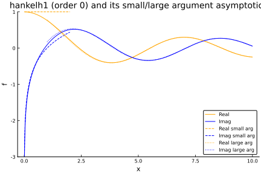
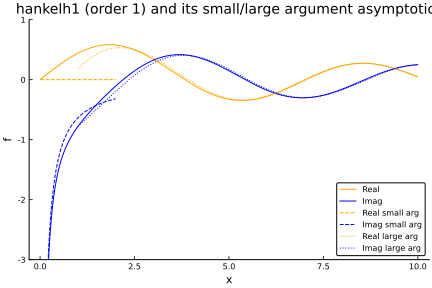
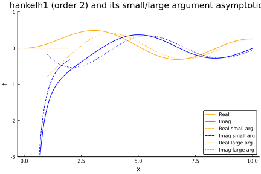
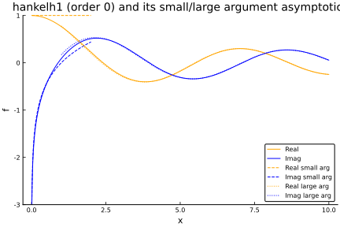
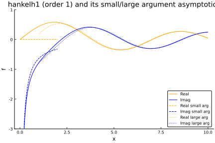
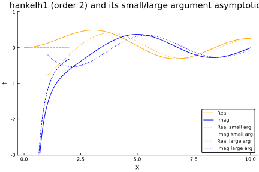

Hankel function asymptotics
We make use of asymptotic forms (approximations) of the Hankel functions, which are valid for small and large argument.
[Maths here]
Reference: Abramowitz and Stegun/ Digital Library of Mathematical Functions.



We make use of asymptotic forms (approximations) of the Hankel functions, which are valid for small and large argument.
[Maths here]
Reference: Abramowitz and Stegun/ Digital Library of Mathematical Functions.


